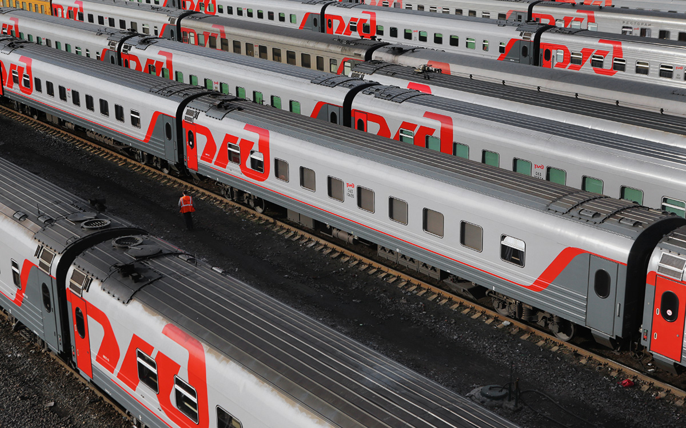

Холдинг «Российские железные дороги» (полное наименование — Открытое акционерное общество «Российские железные дороги» (ОАО «РЖД», официальное наименование на английском языке — Joint Stock Company «Russian Railways» (JSCo «RZD») — российская государственная вертикально интегрированная компания, владелец инфраструктуры общего пользования и крупнейший перевозчик российской сети железных дорог. Образовано в 2003 году на базе Министерства путей сообщения России. 100 % акций принадлежат Российской Федерации, на основании Федерального закона от 27 февраля 2003 года № 29-ФЗ «Об особенностях управления и распоряжения имуществом железнодорожного транспорта» Правительство Российской Федерации исполняет от имени государства полномочия акционера ОАО «РЖД»[6]. Главный офис находится в Москве по адресу Новая Басманная улица, дом № 2[7]. Часть подразделений центрального аппарата (профильные железнодорожные департаменты) — Каланчёвская улица, д. № 35.  По состоянию на 2012 год компания ОАО «РЖД» входила в тройку крупнейших транспортных компаний мира. Крупнейший работодатель России. По состоянию на 2019 год в компании работают 711 тыс. человек[4], что составляет 1,2 % от общего числа занятых в экономике России. В 2018 году компания заняла в рейтинге глобальной конкурентоспособности второе место по грузообороту, четвёртое место — по пассажирообороту, первое место по безопасности движения[2], энергоэффективности и защите окружающей среды[8][9]. ОАО «РЖД» осуществляет транспортное обслуживание в 77 из 85 субъектов Российской Федерации. В 2019 году компания перевезла 1,2 млрд пассажиров и 1,28 млрд тонн грузов. Вклад РЖД в ВВП России в 2017 году составляет 1,4 %. Доля РЖД в российских инвестициях — 3 %, в инвестициях транспорта 13,3 %[10]. На ОАО «РЖД» приходится более 27 % пассажирооборота всей транспортной системы России и более 45 % её грузооборота (без учёта трубопроводного транспорта — 87 %). По объёму выручки от реализации продукции ОАО «РЖД» в 2019 году занимает 5-е место в рейтинге крупнейших компаний России[11]. Генеральный директор компании — Олег Белозёров (с 18 ноября 2017 года, до этого, с 20 августа 2015 года — президент).